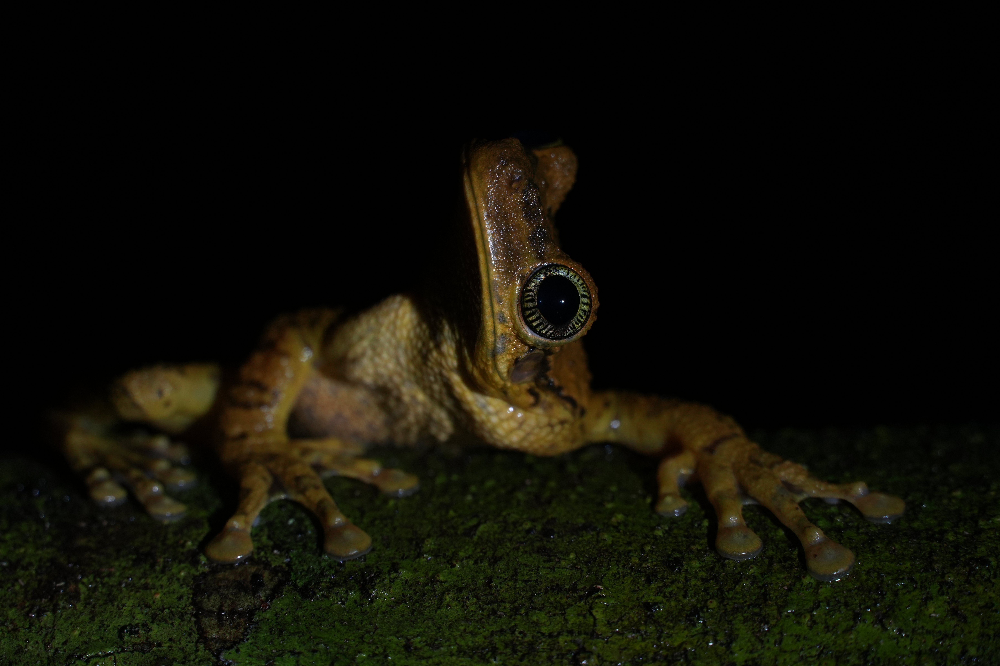
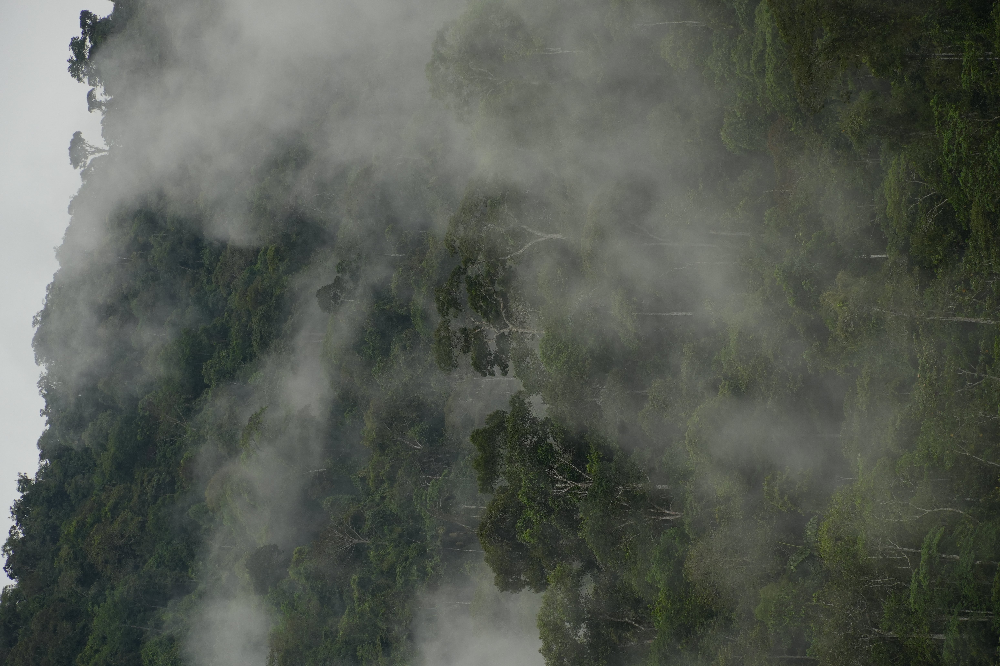
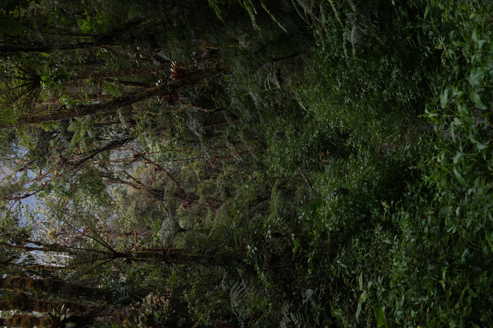
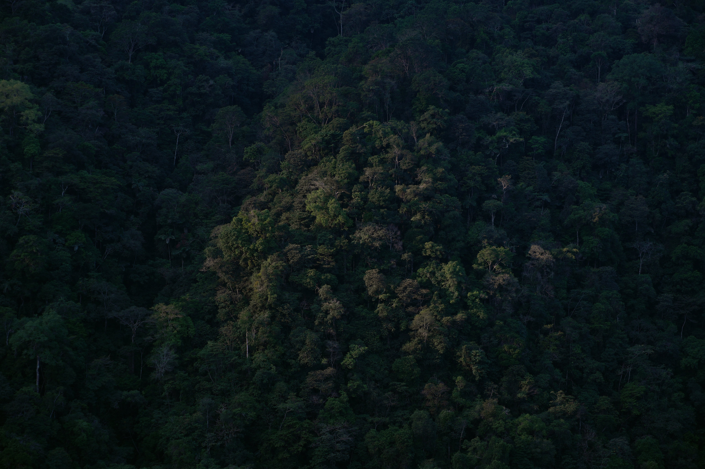

actualmente el tema es la selva peruana
una rana en el parque nacional de manu

nubes pasando por el bosque en el parque nacional de manu

dentro del bosque del parque nacional de yanachaga chemillen

el bosuqe de la cc.nn. mapzato, un pueblo yanesha

sobre mi como fotografo
yo tomo fotos casi a donde voy. no soy profesional, pero me encanta y por eso lo hago. actualmente uso una sony alpha 6700 con lente de 18 a 135mm.
hacer click a la foto para descargarla ^_^